A 2x2 Parameterized Matrix Equation
This demo constructs and solves a simple parameterized matrix equation with a parameterized matrix of size 2x2. Given , consider the functions 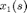 and 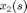 defined on 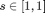 that satisfy
![$$ \left[\begin{array}{cc} 1+\varepsilon & s\\ s &
1\end{array}\right]\left[\begin{array}{c} x_1(s)\\
x_2(s)\end{array}\right] = \left[\begin{array}{c} 2\\ 1\end{array}\right]
$$](twobytwo_demo_eq72208.png)
The true solutions are given by
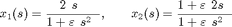
Both of these functions have poles at 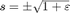, which implies that a polynomial approximation will require more terms as goes to zero. See Constantine et al. (2010) for more details.
We will use the PMPack software to construct polynomial approximations to and for various values of . Since the parameterized matrix depends linearly on the parameter , the univariate pseudospectral approximation is equivalent to the univariate spectral Galerkin approximation. However, for the sake of the demo, we include the syntax for both methods.
Contents
The Solution
We plot the solutions for various values of followed a movie showing the convergence of the polynomial approximation to the true solution.
x1 = @(t,e) (2-t)./(1+e-t.^2); x2 = @(t,e) (1+e-2*t)./(1+e-t.^2); ss = linspace(-1,1,500); figure; plot(ss,x1(ss,0.8),'b-',... ss,x1(ss,0.6),'g-',... ss,x1(ss,0.4),'r-',... ss,x1(ss,0.2),'m-'); legend('\epsilon=0.8','\epsilon=0.6','\epsilon=0.4',... '\epsilon=0.2','Location','NorthEast'); xlabel('s'); ylabel('x_1(s)'); ylim([-5 20]); figure; plot(ss,x2(ss,0.8),'b-',... ss,x2(ss,0.6),'g-',... ss,x2(ss,0.4),'r-',... ss,x2(ss,0.2),'m-'); legend('\epsilon=0.8','\epsilon=0.6','\epsilon=0.4',... '\epsilon=0.2','Location','NorthEast'); xlabel('s'); ylabel('x_2(s)'); ylim([-5 20]);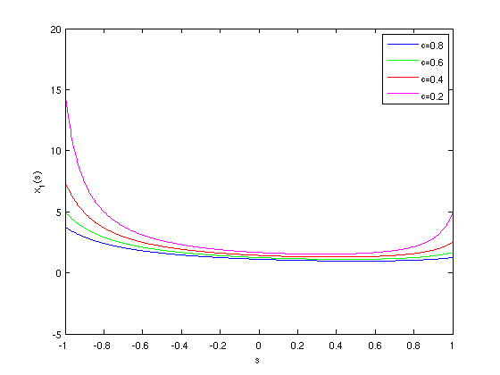 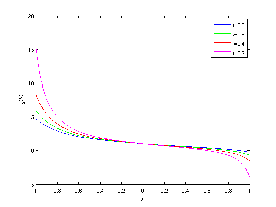
Pseudospectral Convergence Study
We study the convergence of the pseudospectral approximation for various values of . We set a tolerance of 1e-6 and use the adaptive feature to determine the number of polynomial terms necessary to achieve an error smaller than the tolerance, where the error is computed as the relative error between successive approximations.
We also store the 2-norm of the vector of coefficients corresponding to each polynomial term. Theory tells us that this should behave like the approximation error, and we confirm this in the plots below.
epsilon = [0.8 0.6 0.4 0.2]; errors = cell(4,1); coefficients = cell(4,1); pTol = 1e-6; for i=1:4 P = twobytwo_func(epsilon(i)); % get an instance of the 2x2 problem iAb = P.solve; s = P.s; [X,errors{i}] = pseudospectral(iAb,s,'adapt','pTol',pTol); coefficients{i} = sqrt(sum(X.coefficients.^2)); end
Plot Pseudospectral Results
We first plot the decay of the error for the different values of . We see clearly that the decay rate decreases as gets smaller. We then plot the 2-norm of the coefficients associated with each basis polynomial. As theory suggests, this behaves like the error.
figure;
semilogy(1:length(errors{1}),errors{1},'bx',...
1:length(errors{2}),errors{2},'gs',...
1:length(errors{3}),errors{3},'ro',...
1:length(errors{4}),errors{4},'m.');
legend('\epsilon=0.8','\epsilon=0.6','\epsilon=0.4',...
'\epsilon=0.2','Location','NorthEast');
xlabel('Order of Pseudospectral Expansion');
ylabel('Pseudospectral Error');
ylim([pTol 10]);
figure;
semilogy(1:length(coefficients{1}),coefficients{1},'bx',...
1:length(coefficients{2}),coefficients{2},'gs',...
1:length(coefficients{3}),coefficients{3},'ro',...
1:length(coefficients{4}),coefficients{4},'m.');
legend('\epsilon=0.8','\epsilon=0.6','\epsilon=0.4',...
'\epsilon=0.2','Location','NorthEast');
xlabel('Order of Basis Polynomial');
ylabel('Magnitude of Pseudospectral Expansion Coefficient');
ylim([pTol 10]);
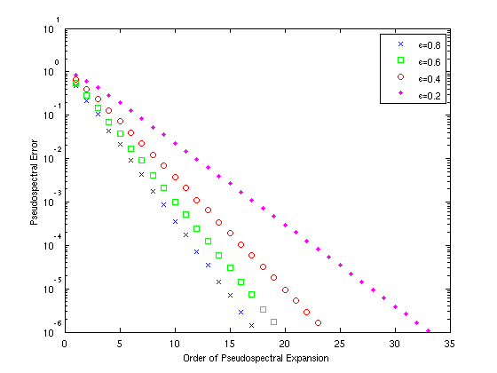 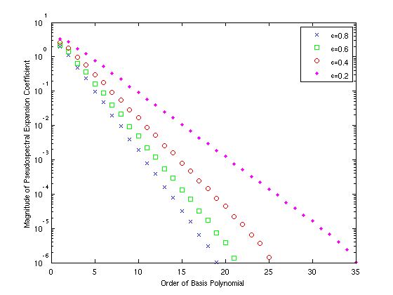 Observing Convergence
We next show convergence of the polynomial approximation for with 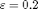. We also plot the quadrature points where the polynomial interpolates the true solution.

Spectral Galerkin Convergence Study
We repeat the above convergence study with the spectral Galerkin method to demonstrate the interface for the code.
epsilon = [0.8 0.6 0.4 0.2]; errors = cell(4,1); coefficients = cell(4,1); pTol = 1e-6; for i=1:4 P = twobytwo_func(epsilon(i)); % get an instance of the 2x2 problem A = P.A; b = P.b; s = P.s; [X,errors{i}] = spectral_galerkin(A,b,s,'adapt','pTol',pTol); coefficients{i} = sqrt(sum(X.coefficients.^2)); end
Plot Spectral Galerkin Results
We generate the same plots for the Galerkin approximation as we did for pseudospectral approximation. No surprises here -- the approximations behave identically.
figure;
semilogy(1:length(errors{1}),errors{1},'bx',...
1:length(errors{2}),errors{2},'gs',...
1:length(errors{3}),errors{3},'ro',...
1:length(errors{4}),errors{4},'m.');
legend('\epsilon=0.8','\epsilon=0.6','\epsilon=0.4',...
'\epsilon=0.2','Location','NorthEast');
xlabel('Order of Galerkin Polynomial Expansion');
ylabel('Galerkin Error');
ylim([pTol 10]);
figure;
semilogy(1:length(coefficients{1}),coefficients{1},'bx',...
1:length(coefficients{2}),coefficients{2},'gs',...
1:length(coefficients{3}),coefficients{3},'ro',...
1:length(coefficients{4}),coefficients{4},'m.');
legend('\epsilon=0.8','\epsilon=0.6','\epsilon=0.4',...
'\epsilon=0.2','Location','NorthEast');
xlabel('Order of Basis Polynomial');
ylabel('Magnitude of Galerin Expansion Coefficient');
ylim([pTol 10]);
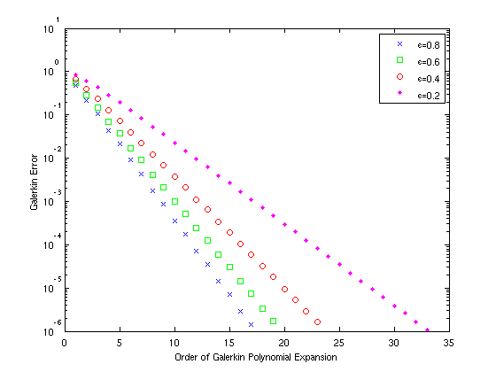